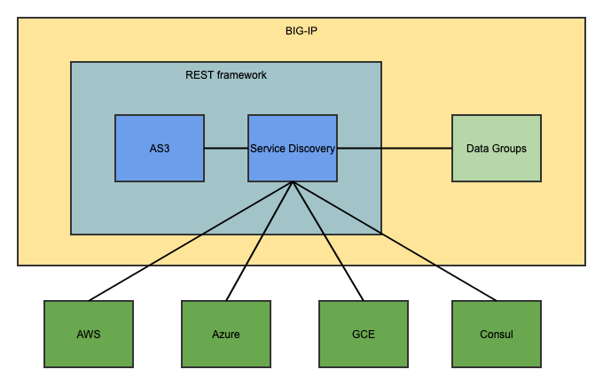
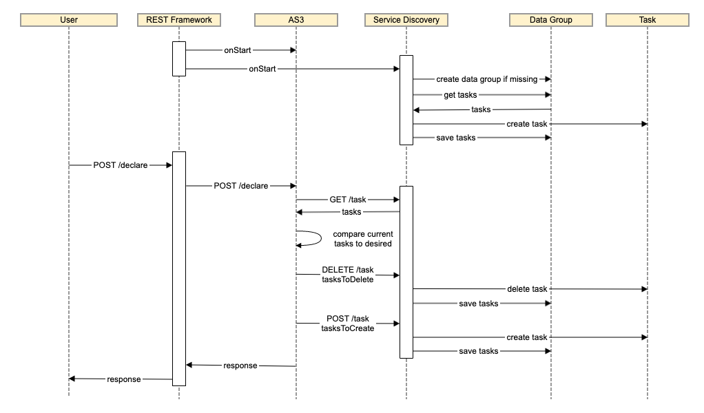
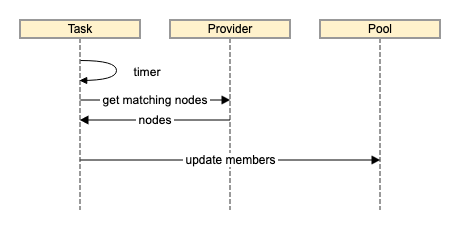

Appendix C: Service Discovery Design
Overview
Service Discovery allows BIG-IP AS3 to populate BIG-IP pool members based on criteria provided in the declaration (see Service Discovery). These criteria specify a provider to query for members to add to the pool. Service Discovery currently supports the following providers
- AWS
- Azure
- GCE
- Consul
While the parameters required in a declaration are different for each provider, the functionality is the same.
Each Service Discovery entry in a BIG-IP AS3 declaration creates a Service Discovery task. These tasks are executed periodically at an interval specified in the declaration. The task information is stored in a data group on the BIG-IP. When a task executes, it queries the provider for nodes that match the parameters provided in the declaration.
Service Discovery is made of the following components:
- iApp extensions built on the REST framework
- BIG-IP AS3: Configures BIG-IP and interfaces to Service Discovery.
- Service Discovery: Queries providers for matching nodes and updates appropriate pool members.
- TMOS data groups used for storage of the tasks

Data Flow
Task Creation
Tasks are created when a user sends a declaration to BIG-IP AS3 which contains pool members with an addressDiscovery type which is not static. Each task is associated with a pool to update. These tasks are stored in an internal data storage group called ServiceDiscovery/tasks.

Task Execution
Tasks are executed periodically based on their update interval. When the timer executes the task, the task queries the provider for the current list of matching nodes. If the members in the associated pool do not match, they are updated to the current list of nodes.
